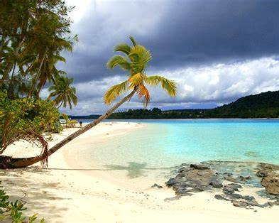

About Tonga
Tonga is a Polynesian kingdom located in the South Pacific Ocean. The country is made up of many islands and is known for its beautiful beaches, ocean waters, traditional culture, and strong communities.
Nuku'alofa is the capital of Tonga and is located on Tongatapu. Tonga has a rich Polynesian heritage and a strong connection to family, community, and the ocean.
Weather
Temperature: 8 °C
Wind Speed: 15 km/h
Wind Chill: N/A
Conditions: Partly Cloudy